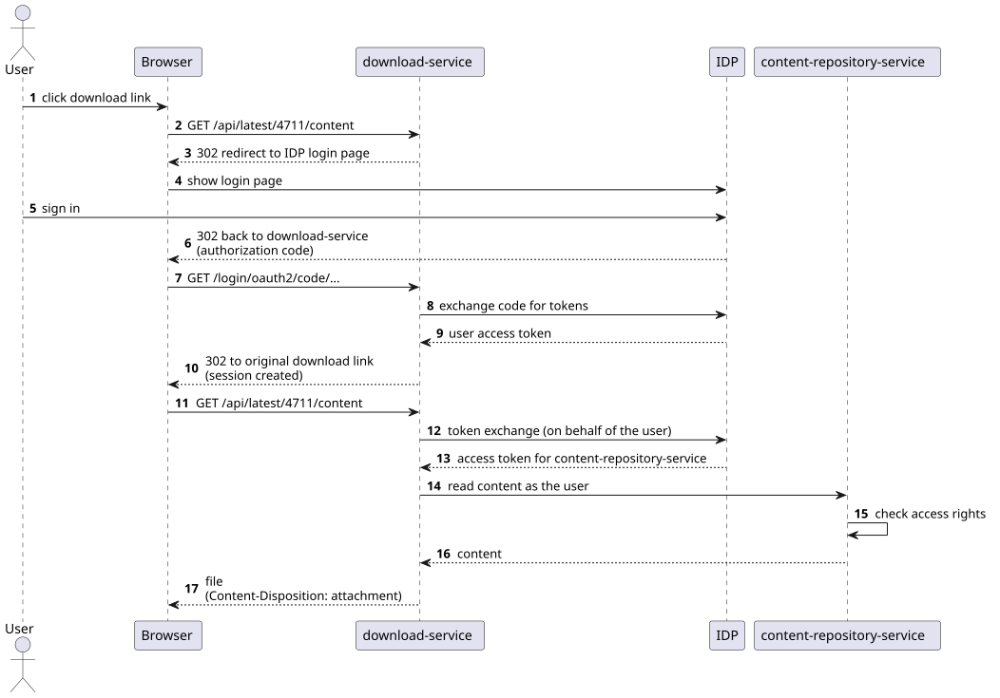

1. Overview
The download-service provides stable, plain HTTP download links for content stored in the content-repository-service (arveo). You can put these links in external applications that cannot talk to the content-repository-service API themselves, for example:
-
a SharePoint site or a wiki page,
-
an e-mail or chat message,
-
a report or a dashboard generated by a third-party tool.
When a user clicks such a link, the browser downloads the file. The download-service makes sure that only authorized users can download content:
-
If the request carries no valid access token, the service redirects the browser to the login page of the configured identity provider (IDP), for example Keycloak or Entra ID. After a successful login, the browser returns to the original download link and the download starts.
-
The download-service reads the content from the content-repository-service on behalf of the logged-in user. The content-repository-service applies its normal access rights checks, so a user can only download content they are allowed to read.
Besides single files, the service offers zip downloads of several files (see Zip downloads) and csv exports of meta data (see Csv exports).
The service needs no database. Only zip downloads store the built zip files for a limited time in a local directory.
2. How it works

-
The browser requests a download link, for example
https://download.example.com/api/latest/4711/content. -
All paths below
/api/**are secured. If the request has no valid session and no bearer token, the service answers the request as follows:-
Browser requests (requests that accept
text/html, which is what a browser sends when a user clicks a link) are redirected to the IDP login page. This uses the standard OpenID Connect authorization code flow. -
Other clients (scripts, REST clients) get the status
401 Unauthorized. They must send anAuthorization: Bearer <access token>header.
-
-
After the login, the IDP redirects the browser back to the download-service. The service creates an HTTP session for the user, so further downloads in the same browser session do not need another login. If the user already has a session at the IDP (single sign-on), the redirect round trip is usually invisible to the user.
-
The download-service exchanges the user’s token for a token for the content-repository-service using the OAuth 2.0 token exchange grant (RFC 8693, "on behalf of" flow). It then reads the content from the content-repository-service with this token, so the content-repository-service sees the actual user and not a technical account.
-
The service streams the content back to the browser with these response headers:
-
Content-Type: the media type stored in the repository, -
Content-Length: the size stored in the repository, -
Content-Disposition: attachment; filename="<file name>": the browser saves the file instead of displaying it. The file name is the one stored with the content element. If no file name is stored, the name of the content element is used. See [add-missing-file-name-extension] to learn how a missing file extension is handled.
-
3. Download links
The service provides two kinds of download links:
| Link | Description |
|---|---|
|
Downloads the content element |
|
Downloads the content element |
Parameters:
documentId-
The ID of the document in the content-repository-service, as a number.
versionId-
The ID of a document version in the content-repository-service, as a number.
contentName-
The name of the content element to download. For document types that do not define their own content element names, use
content.
Example links:
https://download.example.com/api/latest/281474976712345/content https://download.example.com/api/version/281474976798765/content
The service answers with the following status codes:
| Status | Meaning |
|---|---|
|
The content is returned. |
|
The browser is not logged in yet and is redirected to the IDP login page. |
|
A non-browser request has no valid access token. |
|
The user is logged in but the content-repository-service denies access to the document. |
|
The document, the version, or the content element does not exist. |
| To create a link in an application, read the document ID (or version ID) from the content-repository-service and add it to the base URL of the download-service. The IDs do not change, so you can store links permanently. |
4. Zip downloads
A client can download several content elements as one zip file. The client describes the structure of the zip file, the service builds the zip file in the background and offers it for download afterwards. The download supports HTTP range requests, so an interrupted download can be resumed.
| Endpoint | Description |
|---|---|
|
Creates a job that builds a zip file. The body describes the zip file (see below). All entries are checked before the
job is created, so a missing content element or missing access rights are reported immediately. Returns the job
with status |
|
Returns the state of the job: |
|
Downloads the zip file of a completed job. Supports the headers |
|
Deletes the job and its zip file. A running job is cancelled. |
Example request body:
{
"fileName": "export.zip",
"entries": [
{ "documentId": 281474976712345, "contentName": "content", "folder": "invoices/2026" },
{ "versionId": 281474976798765, "contentName": "content", "folder": "invoices/2025", "fileName": "old.pdf" }
]
}fileName-
The file name offered when downloading the zip file. Optional, defaults to
download.zip. entries-
The files of the zip file. Each entry needs either a
documentId(latest version) or aversionId, and thecontentName.folderis the folder inside the zip file, nested folders are separated by/. Leave it empty for the root folder.fileNameoptionally overrides the file name stored with the content element.
Rules for the structure of the zip file:
-
Folders must not contain
.or..segments and must not be absolute paths. -
File names must not contain
/or\. File names stored in the repository are adjusted accordingly. -
If the same path occurs more than once, a counter is added to the file name, for example
invoice (1).pdf. Paths are compared case insensitively. -
The number of entries and the total size of the contents are limited, see [zip-properties].
A typical client works like this:
-
Create the job with
POST /api/zip-jobsand remember theidand theLocationheader. -
Poll
GET /api/zip-jobs/{jobId}until the status isCOMPLETEDorFAILED. -
Download the zip file with
GET /api/zip-jobs/{jobId}/content. -
If the download is interrupted, request the rest with
Range: bytes=<received bytes>-andIf-Range: <etag>. The service answers with206 Partial Content. The zip file of a job never changes, so the parts fit together. -
Optionally delete the job with
DELETE /api/zip-jobs/{jobId}. Otherwise it is deleted after the retention time.
An example with the TypeScript SDK is shown in TypeScript SDK.
Jobs belong to the user that created them. Other users get 404. The zip file is built on behalf of this user: the
download-service exchanges the access token of the request that created the job for a token for the
content-repository-service. By default, the token exchange also returns a refresh token (see Impersonation and refresh tokens). The
download-service then renews the exchanged token while the zip file is built, so the job keeps running after the
access token of the user has expired.
The refresh token belongs to the session of the user at the IDP. A job can therefore only run as long as this session exists. In Keycloak, the limits are the realm settings SSO Session Max (default: 10 hours) and SSO Session Idle (default: 30 minutes; renewing the token keeps the session active). If the user logs out or an administrator ends the session, the job fails as well. If the refresh token mechanism is disabled, the job fails as soon as the access token of the user expires, typically after 5 minutes. A failed job has to be created again.
| Status | Meaning |
|---|---|
|
The request was successful. For downloads: the whole zip file is returned. |
|
The job was created. The zip file is built in the background. |
|
A part of the zip file is returned, as requested with the |
|
The request is invalid, for example an entry without content name, a folder containing |
|
The content-repository-service denies access to a content element. |
|
The job does not exist, belongs to another user, or a content element does not exist. |
|
The zip file is requested, but the job is not completed yet. |
|
The requested range lies outside the zip file. |
|
Too many jobs are waiting. Try again later. |
5. Csv exports
A client can export meta data of documents, folders, containers, relations and meta data types as a csv file. The client sends an EQL filter, the columns of the file and its format. There are two kinds of exports with an endpoint each: an export of types searches one or more types, every row of the file is one entity. An export with parts joins types, for example invoices with the customer file they belong to (see Exporting customer files), and combines different types in one file (see Combining different types). Both kinds of exports use the union search of the content-repository-service, the export of types with one part per type. The service searches the entities on behalf of the user and streams the csv file while it reads the entities page by page from the content-repository-service. Only one page is held in memory, so large exports need no disk space and the client receives the first lines immediately.
| Endpoint | Description |
|---|---|
|
Exports one or more types without joins (body |
|
Exports parts with joins (body |
Both endpoints search the entities and return the csv file (Content-Type: text/csv). The request is validated and
the first page is read before the response starts, so errors are reported with the status codes below. The header
X-Total-Count contains the number of entities matching the filter, independent of offset and maxRows.
Example request body of an export of types. The body uses the JSON format of the generated SDKs: every object carries its type in
@type, lists are wrapped in @list and long values in @long. The filter is an EQL expression in the same format
as in the search API of the content-repository-service. Java clients build the filter with
de.eitco.commons.query.language.api.model.Eql, for example
Eql.equal(Eql.contextReference("customer_name"), Eql.value("ACME Inc.")), and the order with
new Order(OrderDirection.DESCENDING, ContextReference.newInstance("invoice_date")).
{
"@type": "de.eitco.arveo.download.api.csv.CsvTypesExportRequest",
"fileName": "invoices.csv",
"types": {"@list": ["invoice"]},
"filter": {
"@type": "eql:and",
"left": {
"@type": "eql:eq",
"left": {"@type": "eql:reference", "reference": {"@list": ["customer_name"]}},
"right": {"@type": "eql:value", "value": "ACME Inc."}
},
"right": {
"@type": "eql:eq",
"left": {"@type": "eql:reference", "reference": {"@list": ["fiscal_year"]}},
"right": {"@type": "eql:value", "value": 2026}
}
},
"order": {
"@list": [
{
"@type": "de.eitco.commons.query.language.api.Order",
"direction": {"@type": "de.eitco.commons.query.language.api.OrderDirection", "@value": "DESCENDING"},
"reference": {"@type": "eql:reference", "reference": {"@list": ["invoice_date"]}}
}
]
},
"columns": {
"@list": [
{"@type": "de.eitco.arveo.download.api.csv.CsvColumn", "attribute": "id", "header": "ID"},
{"@type": "de.eitco.arveo.download.api.csv.CsvColumn", "attribute": "invoice_number", "header": "Invoice"},
{"@type": "de.eitco.arveo.download.api.csv.CsvColumn", "attribute": "invoice_date", "header": "Date"},
{
"@type": "de.eitco.arveo.download.api.csv.CsvColumn",
"attribute": "amount",
"header": "Amount",
"pattern": "#,##0.00"
},
{"@type": "de.eitco.arveo.download.api.csv.CsvColumn", "attribute": "initial_creation_date", "header": "Created"}
]
},
"offset": {"@long": "0"},
"maxRows": 50000,
"format": {
"@type": "de.eitco.arveo.download.api.csv.CsvFormat",
"delimiter": ";",
"byteOrderMark": true,
"locale": "de-DE",
"datePattern": "dd.MM.yyyy",
"dateTimePattern": "dd.MM.yyyy HH:mm",
"timeZone": "Europe/Berlin"
}
}fileName-
The file name offered when downloading the file. Optional, defaults to
export.csv. types-
Only for exports of types: the names of the type definitions to search in. Meta data types need a primary key and cannot be combined with other object types (see Exporting meta data types).
parts-
Only for exports with parts: the parts of an export with joins or unions, see Exporting customer files and Combining different types. Each part has a main
typewith analiasand optionallyjoins, each with ajoinType(LEFT, the default, orINNER), atype, analiasand a join conditionon. An optionalfilterof a part only applies to the rows of this part, in addition to the filter of the request. The filters, the order, the join conditions and the columns reference fields by alias, for example["customer", "name"]. filter-
The EQL expression selecting the entities. Optional, all entities of the types are exported if it is missing.
order-
The order of the rows, a list of attributes with direction
ASCENDINGorDESCENDING. The service always adds the key fields as last criteria, so the order is unique: theid, for meta data types the primary key (see Exporting meta data types). For exports with parts, it adds the key fields of all aliases every part uses. With several types or parts, the index of the part follows. Optional, defaults to the order of the key fields. offset-
The number of entities to skip in the given order. Optional, defaults to
0. maxRows-
The maximum number of rows without header line. Optional, defaults to
download-service.csv.max-rows, which is also the upper limit (see [csv-properties]). columns-
The columns in the order they appear in the file.
attributeis the name of an attribute of one of the types or one of the system fieldsid,version_id,version_number,version_comment,initial_creation_date,initial_creation_user_id,creation_date,creator_user_id,modification_date,modification_user_id,retention_date,litigation_hold,deleted,update_counterandlast_delete_restore_date.headeris the name in the header line and defaults to the attribute.patternoptionally overrides the number or date pattern of the format for this column. If several types are exported, attributes that a type does not have are empty. Meta data types only have the system fieldsdeleted,update_counterandlast_delete_restore_date, the other system fields are empty for them.aliasselects the type of the attribute. It is required for exports with parts. For exports withtypesit is optional: an alias that is one of the type names restricts the column to entities of this type, so attributes with the same name in different types can be written to different columns.Two pseudo fields describe where a row comes from:
type_nameis the name of the type of the entity of the alias,union_partthe index of the part (or of the type intypes) of the row.union_partneeds no alias. Attributes and system fields of the same name take precedence. format-
The format of the file. All options are optional, the defaults produce a file as defined by RFC 4180:
Option Default Description delimiter,The character separating the values, for example
;or a tab.quoteCharacter"The character enclosing quoted values.
quoteModeMINIMALMINIMALquotes values containing the delimiter, the quote or escape character or a line break. To be safe for parsers, it also quotes values starting with a character up to#(for example a space), values ending with whitespace and an empty value at the start of a line.ALLquotes every value,NON_NUMERICevery value except numbers and booleans. Values without content (null) are never quoted, so they can be distinguished from empty strings.NONEquotes nothing and escapes delimiters, escape characters and line breaks with the escape character instead (line breaks become\rand\n).escapeCharacternone
Escapes the quote character in quoted values instead of doubling it. Required for
quoteModeNONE.lineSeparatorCRLFCRLForLF.includeHeadertrueWhether the first line contains the names of the columns.
nullValueempty
The text written for attributes without value, for example
\N.charsetUTF-8The character set, for example
windows-1252. Characters it cannot represent are replaced by?.byteOrderMarkfalseStarts the file with a byte order mark, which some spreadsheet applications need to detect UTF-8. Only for unicode character sets.
localenone
A language tag like
de-DE. Defines the decimal and grouping separators and the names of months and days in patterns.decimalSeparator.Overrides the decimal separator of the locale.
groupingSeparator,Overrides the grouping separator of the locale. Only used by number patterns.
integerPatternnone
A
java.text.DecimalFormatpattern for integral numbers, for example,#0. Without pattern, integral numbers are written without grouping.decimalPatternnone
A
java.text.DecimalFormatpattern for decimal numbers, for example,#0.00. Values are rounded half up. Without pattern, decimal numbers are written with all digits.datePatternyyyy-MM-ddA
java.time.format.DateTimeFormatterpattern for dates.timePatternISO 8601
A
DateTimeFormatterpattern for times, for exampleHH:mm.dateTimePatternISO 8601
A
DateTimeFormatterpattern for timestamps, for exampledd.MM.yyyy HH:mm:ss. Defaults to the ISO format with offset, for example2026-01-31T12:45:30.123Z.timeZonenone
Converts timestamps to this time zone before they are formatted, for example
Europe/Berlin.trueValue,falseValuetrue,falseThe texts for boolean values.
listSeparator|Separates the elements of multi valued attributes.
Errors are reported before the response starts:
| Status | Meaning |
|---|---|
|
The csv file is returned. |
|
The request is invalid. The service reports the reason with a subclass of |
|
The content-repository-service denies the search. |
A large export can be split into several requests: request the first part with offset 0 and maxRows n, the
following parts with offset n, 2n, … and includeHeader false (and without byte order mark), and append
them. X-Total-Count of the first response tells how many parts are needed. Each part is a separate search, and the
service reads the pages of a part with offsets as well. Entities that are created, changed or deleted in the meantime
may therefore be missing or appear twice. An order by attributes that do not change (the default order by the key
fields)
keeps the effect small. If the content-repository-service fails after the response has started,
the service aborts the connection, so the client receives an incomplete file and an error of its HTTP library.
The generated clients only return the file. To read the number of entities as well, the SDKs contain a
CsvExportClient that wraps the generated client and reads the header X-Total-Count. In Java it is part of
download-service-sdk (package de.eitco.arveo.download.sdk.csv), which both packagings of the Java SDK include.
Like the generated client, it has the methods exportTypes and exportParts:
CsvExportClient client = new CsvExportClient(csvExportResourceClientFactory.newClient());
try (CsvExportResponse response = client.exportTypes(request)) {
long totalCount = response.totalCount();
InputStream csv = response.csv();
// ...
}An example with the TypeScript SDK is shown in TypeScript SDK.
5.1. Exporting customer files
A customer file often consists of several types connected by foreign keys. The following types describe a simple example: invoices reference the customer they belong to.
@Type(ObjectType.DOCUMENT)
@FilingEnabled
public interface Customer {
@SystemProperty(SystemPropertyName.ID)
DocumentId id();
@Unique
String getName();
void setName(String name);
}
@Type(ObjectType.DOCUMENT)
@FilingEnabled
public interface Invoice {
@ForeignKey(name = "fk_invoice_customer", target = Customer.class, targetProperty = "id")
long getCustomerNumber();
void setCustomerNumber(long number);
@Optional
String getCustomerName();
void setCustomerName(String customerName);
@Optional
String getName();
void setName(String name);
@Optional
Integer getTotal();
void setTotal(Integer total);
@Optional
Boolean getOpen();
void setOpen(Boolean open);
}An export of the open invoices with the data of their customers is an export with parts (POST
/api/csv-export/parts). It has one part: the main type invoice, joined with
the type customer by the foreign key. Every row of the file is an invoice combined with its customer. A customer with
several invoices therefore appears in several rows. With the Java SDK the request looks like this:
CsvExportJoin customer = new CsvExportJoin();
customer.setType("customer");
customer.setAlias("customer");
customer.setOn(Eql.equal(
Eql.contextReference("invoice", "customer_number"),
Eql.contextReference("customer", "id")
));
CsvExportPart invoices = new CsvExportPart();
invoices.setType("invoice");
invoices.setAlias("invoice");
invoices.setJoins(List.of(customer));
CsvPartsExportRequest request = new CsvPartsExportRequest();
request.setFileName("open-invoices.csv");
request.setParts(List.of(invoices));
request.setFilter(Eql.equal(Eql.contextReference("invoice", "open"), Eql.value(true)));
request.setOrder(List.of(
new Order(OrderDirection.ASCENDING, ContextReference.newInstance("customer", "name")),
new Order(OrderDirection.DESCENDING, ContextReference.newInstance("invoice", "total"))
));
// column(alias, attribute, header) creates a CsvColumn with these properties
request.setColumns(List.of(
column("customer", "id", "Customer number"),
column("customer", "name", "Customer"),
column("invoice", "name", "Invoice"),
column("invoice", "total", "Total")
));
CsvFormat format = new CsvFormat();
format.setDelimiter(";");
request.setFormat(format);
try (InputStream csv = csvExportResourceClient.exportParts(request)) {
// ...
}The same request as JSON:
{
"@type": "de.eitco.arveo.download.api.csv.CsvPartsExportRequest",
"fileName": "open-invoices.csv",
"parts": {
"@list": [
{
"@type": "de.eitco.arveo.download.api.csv.CsvExportPart",
"type": "invoice",
"alias": "invoice",
"joins": {
"@list": [
{
"@type": "de.eitco.arveo.download.api.csv.CsvExportJoin",
"joinType": {"@type": "de.eitco.arveo.download.api.csv.CsvJoinType", "@value": "LEFT"},
"type": "customer",
"alias": "customer",
"on": {
"@type": "eql:eq",
"left": {"@type": "eql:reference", "reference": {"@list": ["invoice", "customer_number"]}},
"right": {"@type": "eql:reference", "reference": {"@list": ["customer", "id"]}}
}
}
]
}
}
]
},
"filter": {
"@type": "eql:eq",
"left": {"@type": "eql:reference", "reference": {"@list": ["invoice", "open"]}},
"right": {"@type": "eql:value", "value": true}
},
"order": {
"@list": [
{
"@type": "de.eitco.commons.query.language.api.Order",
"direction": {"@type": "de.eitco.commons.query.language.api.OrderDirection", "@value": "ASCENDING"},
"reference": {"@type": "eql:reference", "reference": {"@list": ["customer", "name"]}}
},
{
"@type": "de.eitco.commons.query.language.api.Order",
"direction": {"@type": "de.eitco.commons.query.language.api.OrderDirection", "@value": "DESCENDING"},
"reference": {"@type": "eql:reference", "reference": {"@list": ["invoice", "total"]}}
}
]
},
"columns": {
"@list": [
{
"@type": "de.eitco.arveo.download.api.csv.CsvColumn",
"alias": "customer",
"attribute": "id",
"header": "Customer number"
},
{
"@type": "de.eitco.arveo.download.api.csv.CsvColumn",
"alias": "customer",
"attribute": "name",
"header": "Customer"
},
{
"@type": "de.eitco.arveo.download.api.csv.CsvColumn",
"alias": "invoice",
"attribute": "name",
"header": "Invoice"
},
{
"@type": "de.eitco.arveo.download.api.csv.CsvColumn",
"alias": "invoice",
"attribute": "total",
"header": "Total"
}
]
},
"format": {"@type": "de.eitco.arveo.download.api.csv.CsvFormat", "delimiter": ";"}
}The resulting file:
Customer number;Customer;Invoice;Total
4503599627371521;ACME Inc.;2026-0815;250
4503599627371521;ACME Inc.;2026-0802;100
4503599627371522;Globex Corp.;2026-0811;80Notes on joins:
-
A
LEFTjoin also exports invoices without customer, the customer columns are empty then. AnINNERjoin only exports invoices that have a customer. -
The service adds
invoice.idandcustomer.idto the order. A join may find several entities for one main entity, so both ids are needed to read the pages without skipping or repeating rows. -
A part may contain several joins, for example the customer and the contract of an invoice. Join conditions may reference all aliases defined before.
5.2. Combining different types
Several parts are combined like UNION ALL in SQL. If the parts use the same aliases, a column with such an alias
contains the value of the type of each row. Columns of an alias a part does not define are empty for its rows. The
following parts export invoices with their customer and documents of the type basic_document in one file:
CsvExportPart invoices = ...; // invoice as "document", joined with customer as "customer"
CsvExportPart basicDocuments = new CsvExportPart();
basicDocuments.setType("basic_document");
basicDocuments.setAlias("document");
request.setParts(List.of(invoices, basicDocuments));
request.setColumns(List.of(
column(null, "union_part", "Part"),
column("document", "type_name", "Type"),
column("document", "customer_name", "Customer name"), // both types have this attribute
column("customer", "name", "Customer") // empty for basic documents
));The filter applies to every part. A field that only some of the types have can be referenced by the name of its type
instead of the alias, for example ["invoice", "name"]. The content-repository-service then evaluates the condition
only in the parts containing this type and treats it as false in the other parts:
request.setFilter(Eql.or(
Eql.equal(Eql.contextReference("invoice", "name"), Eql.value("2026-0815")),
Eql.equal(Eql.contextReference("basic_document", "a_string"), Eql.value("archived"))
));Alternatively, each part gets its own filter. It only applies to the rows of the part, so it may reference every
field of the types of the part by alias. The filter of the request then contains only conditions for all parts, or is
left out:
invoices.setFilter(Eql.and(
Eql.equal(Eql.contextReference("document", "name"), Eql.value("2026-0815")),
Eql.equal(Eql.contextReference("document", "open"), Eql.value(true))
));
basicDocuments.setFilter(Eql.equal(Eql.contextReference("document", "a_string"), Eql.value("archived")));The service adds the ids of the aliases all parts use and the index of the part to the order, document.id in the
example. If the parts have no alias in common, the order given by the client must be unique.
For exports without joins, an export of types is sufficient. Since a row is one entity there, a column with the
name of a type as alias contains only values of entities of this type, and type_name and union_part tell which
type a row has.
5.3. Exporting meta data types
Meta data types have no id. The service orders their rows by the attributes of the primary key instead, so a meta
data type can only be exported if it has a primary key. The following type is identified by its code:
@Type(ObjectType.META)
public interface PaymentTerm {
@PrimaryKey
String getCode();
void setCode(String code);
@Optional
String getName();
void setName(String name);
@Optional
Integer getDays();
void setDays(Integer days);
}A meta data type is exported like every other type, in an export of types or as type of a part or join. Without an order given by the client, the rows are ordered by the primary key:
CsvTypesExportRequest request = new CsvTypesExportRequest();
request.setTypes(List.of("payment_term"));
request.setColumns(List.of(column(null, "code", "Code"), column(null, "days", "Days")));The union search of the content-repository-service resolves the fields of the order in the first part. The types an
alias refers to in the different parts, and the types of types, must therefore have the same key fields: a meta data
type cannot be combined with documents, folders, containers or relations under the same alias, and meta data types can
only be combined with each other if their primary keys consist of the same attributes. Otherwise the service rejects
the request with an IncompatibleCsvExportTypesException. Under different aliases, for example a meta data type
joined with documents, the types can be combined freely.
6. TypeScript SDK
Web applications can call the API with the generated TypeScript SDK, the npm package @eitco/download-service
(Maven artifact de.eitco.arveo.download:download-service-client-typescript, type tgz). The SDK sends its requests
with the HttpClient of Angular, via the package @eitco/asdl-library-angular-http. The filters and the order of
csv exports are EQL expressions of the package @eitco/eql. The package @eitco/download-service-sdk adds client side
utilities to the generated SDK, for example the number of entities of a csv export (see Number of entities).
The examples in this chapter are taken from the TypeScript integration tests of the download-service
(test/system-test/src/test/ts). Every method of the SDK returns an RxJS Observable, the examples convert them to
promises with firstValueFrom. IDs and other long values, for example the size of a zip job, are strings in
TypeScript.
6.1. Creating the clients
The SDK uses the Angular HttpClient of the application. Its interceptors apply to the requests of the SDK as well, so
the access token is added the same way as for other requests of the application, for example by the interceptor of
angular-oauth2-oidc.
import {HttpClient} from '@angular/common/http';
import {Angular17HttpRequestExecutorImpl} from '@eitco/asdl-library-angular-http';
import {HttpClient as AsdlHttpClient} from '@eitco/asdl-library-http';
import {
CsvExportResourceClient,
CsvExportResourceClientImplementation,
DownloadServiceResourceClient,
DownloadServiceResourceClientImplementation,
InfoResourceClient,
InfoResourceClientImplementation,
ZipDownloadResourceClient,
ZipDownloadResourceClientImplementation,
} from '@eitco/download-service';
import {CsvExportClient} from '@eitco/download-service-sdk';
// serviceUrl is the base url of the download-service, for example 'https://download.example.com'
const executor = new Angular17HttpRequestExecutorImpl(angularHttpClient);
const httpClient = new AsdlHttpClient(executor);
const info = new InfoResourceClientImplementation(httpClient, serviceUrl);
const download = new DownloadServiceResourceClientImplementation(httpClient, serviceUrl);
const zip = new ZipDownloadResourceClientImplementation(httpClient, serviceUrl);
const csv = new CsvExportResourceClientImplementation(httpClient, serviceUrl);
// additionally returns the number of entities of a csv export (package @eitco/download-service-sdk)
const csvExport = new CsvExportClient(executor, serviceUrl);6.2. Downloading content
The download methods return the content as Blob (see Download links for the parameters):
// documentId is the id of the document in the content-repository-service, for example '281474976712345'
const content: Blob = await firstValueFrom(download.downloadLatest(documentId, 'content'));
// versionId is the id of a version of a document, for example '281474976798765'
const content: Blob = await firstValueFrom(download.downloadVersion(versionId, 'content'));| To offer a file for download in the browser, a plain download link is usually the better choice: the browser downloads the file directly and the application does not hold it in memory. |
6.3. Zip downloads
A zip download consists of several requests (see Zip downloads): create the job, poll it until it is completed, download the zip file and optionally delete the job. A function polling the job:
/**
* Polls the job until it is completed or failed.
*/
function awaitCompletion(zip: ZipDownloadResourceClient, jobId: string): Observable<ZipJob> {
return timer(0, 500).pipe(
concatMap(() => zip.getZipJob(jobId)),
filter(job => job.status === ZipJobStatus.COMPLETED || job.status === ZipJobStatus.FAILED),
take(1),
);
}The whole download:
// without 'fileName', an entry gets the file name stored with the content element
const request = new ZipRequest({
fileName: 'export.zip',
entries: [
new ZipEntryRequest({documentId: documentId, contentName: 'content', folder: 'invoices/2026', fileName: 'first.txt'}),
new ZipEntryRequest({versionId: versionId, contentName: 'content', folder: 'invoices/2025', fileName: 'old.txt'}),
],
});
const created = await firstValueFrom(zip.createZipJob(request));
const job = await firstValueFrom(awaitCompletion(zip, created.id));
if (job.status === ZipJobStatus.FAILED) {
throw new Error(job.error);
}
const zipFile: Blob = await firstValueFrom(zip.downloadZip(job.id, null, null));
// optional, otherwise the job is deleted after the retention time
await firstValueFrom(zip.deleteZipJob(job.id));The parameters range and ifRange of downloadZip resume an interrupted download. received contains the bytes
that were received before the interruption:
// request the rest of the file, the etag ensures that it belongs to the same zip file
const rest: Blob = await firstValueFrom(zip.downloadZip(job.id, `bytes=${received.length}-`, job.etag));6.4. Csv exports
The generated client has a method for each kind of csv export (see Csv exports): exportTypes with a
CsvTypesExportRequest and exportParts with a CsvPartsExportRequest. An export of types with a filter, an order,
two columns and a different delimiter. The csv file is returned as Blob:
// exports the documents of the type 'basic_document' whose attribute 'a_string' has the value of 'group'
const request = new CsvTypesExportRequest({
fileName: 'customers.csv',
types: ['basic_document'],
filter: new Equality({
left: new ContextReference({reference: ['a_string']}),
right: new Value({value: group}),
}),
order: [
new Order({direction: OrderDirection.ASCENDING, reference: new ContextReference({reference: ['customer_name']})}),
],
columns: [
new CsvColumn({attribute: 'customer_name', header: 'Customer'}),
// without header the attribute name is used
new CsvColumn({attribute: 'a_string'}),
],
format: new CsvFormat({delimiter: ';'}),
});
const csv: string = await firstValueFrom(csvExport.exportTypes(request).pipe(concatMap(file => file.text())));An export with parts references the types by alias:
// an export with parts references the types by the aliases of the parts, joins are added with 'joins'
const request = new CsvPartsExportRequest({
parts: [new CsvExportPart({type: 'basic_document', alias: 'document'})],
filter: new Equality({
left: new ContextReference({reference: ['document', 'a_string']}),
right: new Value({value: group}),
}),
order: [
new Order({direction: OrderDirection.ASCENDING, reference: new ContextReference({reference: ['document', 'customer_name']})}),
],
columns: [
new CsvColumn({alias: 'document', attribute: 'customer_name', header: 'Customer'}),
new CsvColumn({alias: 'document', attribute: 'type_name', header: 'Type'}),
],
});
const csv: string = await firstValueFrom(csvExport.exportParts(request).pipe(concatMap(file => file.text())));6.4.1. Number of entities
The header X-Total-Count of the response contains the number of entities matching the filter, independent of
offset and maxRows. The methods of the generated client only return the body of the response. The package
@eitco/download-service-sdk (Maven artifact de.eitco.arveo.download:download-service-sdk-typescript, type tgz)
contains a CsvExportClient that reads the header as well. It is created with the executor of the other clients (see
Creating the clients) and, like the generated client, has the methods exportTypes and exportParts. They return
the csv file together with the number of entities:
const {csv, totalCount} = await firstValueFrom(csvExport.exportTypes(request));
In the browser, JavaScript can only read the response headers that the CORS configuration of the
download-service exposes. The default configuration exposes X-Total-Count, see
security.general.cors-configuration.exposed-headers in Configuration.
|
With the number of entities, a large export can be split into several requests (see Csv exports). The first request tells how many parts are needed, the following parts are requested without header line:
const maxRows = 2;
// the parts must have a stable order
const part = (offset: number) => new CsvTypesExportRequest({
types: ['basic_document'],
filter: new Equality({left: new ContextReference({reference: ['a_string']}), right: new Value({value: group})}),
order: [new Order({direction: OrderDirection.ASCENDING, reference: new ContextReference({reference: ['customer_name']})})],
columns: [new CsvColumn({attribute: 'customer_name', header: 'Customer'})],
offset: String(offset),
maxRows: maxRows,
// only the first part has a header line
format: new CsvFormat({includeHeader: offset === 0}),
});
const first = await firstValueFrom(csvExport.exportTypes(part(0)));
const parts = [await first.csv.text()];
// X-Total-Count of the first part tells how many parts are needed
for (let offset = maxRows; offset < first.totalCount; offset += maxRows) {
const next = await firstValueFrom(csvExport.exportTypes(part(offset)));
parts.push(await next.csv.text());
}
const csv = parts.join('');6.5. Errors
If the service answers with an error status, the observable fails with the HttpErrorResponse of Angular. Its
status is the status code described in the chapters of the endpoints, for example 400 for an invalid request.
7. Other endpoints
| Path | Description |
|---|---|
|
Returns the service name and version. No authentication required. |
|
Redirect to the Swagger UI ( |
|
The OpenAPI description of the API. |
|
Health and info endpoints. No authentication required. You can use the health endpoint for liveness and readiness probes. |
|
Further
Spring Boot actuator endpoints. They require the role configured in |
8. Prerequisites
To run the download-service, you need:
-
a running content-repository-service (arveo) that the download-service can reach,
-
an OpenID Connect identity provider (IDP), for example Keycloak, with the clients described in Setting up the identity provider,
-
optionally a config-service (Spring Cloud Config server) and HashiCorp Vault to provide the configuration and secrets,
-
Java 21 or newer if you run the service as a jar. The container image already contains a Java runtime.
9. Setting up the identity provider
The download-service needs two clients at the IDP. The following describes the setup for Keycloak. Other IDPs need equivalent settings.
9.1. Login client (authorization code flow)
The browser uses this client to log in.
-
Client authentication: on (confidential client with a client secret)
-
Standard flow (authorization code flow): enabled
-
Valid redirect URIs:
https://<download-service host>/login/oauth2/code/<registration id>, for examplehttps://download.example.com/login/oauth2/code/keycloak-authorization-code. The registration ID is the name of the client registration in the download-service configuration (see Configuration). -
Scopes:
openid
9.2. Token exchange client (on behalf of flow)
The download-service uses this client to exchange the user’s token for a token for the content-repository-service.
-
Client authentication: on (confidential client with a client secret)
-
Standard flow: disabled
-
Standard token exchange: enabled (Keycloak 26.2 and newer: Capability config → Standard Token Exchange)
-
Allow refresh token in Standard Token Exchange: Same session (Advanced → OpenID Connect Compatibility Modes). The download-service requests a refresh token in every token exchange by default, so that zip jobs can take longer than the lifetime of the user’s access token (see Zip downloads). If this option is No, every token exchange fails. If your IDP does not support this, disable the mechanism, see Impersonation and refresh tokens.
A refresh token from the token exchange is bound to the session of the user. Offline tokens cannot be requested by token exchange, so a zip job never runs longer than the session of the user (see SSO Session Max and SSO Session Idle in the realm settings).
Make sure the content-repository-service accepts the tokens issued by token exchange, for example by adding it as an audience (audience mapper in Keycloak).
10. Configuration
The download-service is a Spring Boot application. You can provide the configuration with any mechanism that Spring Boot supports:
-
a config-service (Spring Cloud Config server). The service imports its configuration from the config-service if
spring.cloud.config.uriis set, for example with the environment variableSPRING_CLOUD_CONFIG_URI. The application name, and therefore the name of the configuration file at the config-service, isdownload-service. -
HashiCorp Vault for secrets (
spring.cloud.vault.*). Setspring.cloud.vault.enabled=falseif you do not use Vault. -
an
application.yamlfile next to the jar, or in a mountedconfig/directory of the container, -
environment variables, for example
SERVER_PORT=32224.
10.1. Complete example
server:
port: 32224 (1)
spring:
security:
oauth2:
resourceserver:
jwt:
issuer-uri: "https://idp.example.com/realms/arveo" (2)
client:
registration:
keycloak-authorization-code: (3)
provider: keycloak
client-id: "download-service"
client-secret: "<secret>"
scope: openid
keycloak-token-exchange: (4)
provider: keycloak
client-id: "download-service-obo"
client-secret: "<secret>"
authorization-grant-type: "urn:ietf:params:oauth:grant-type:token-exchange"
provider:
keycloak:
issuer-uri: "https://idp.example.com/realms/arveo"
cloud:
discovery:
client:
simple:
instances:
content-repository-service: (5)
- uri: "https://arveo.example.com"
metadata:
api-version: 1.2.0
openapi:
token-url: "https://idp.example.com/realms/arveo/protocol/openid-connect/token" (6)
security:
general:
role-for-actuator-access: ACTUATOR (7)
download-service:
add-missing-file-name-extension: true (8)| 1 | The HTTP port of the service. If you do not set it, Spring Boot uses port 8080. The default port of the
download-service in EITCO environments is 32224. |
| 2 | The issuer of the access tokens. The service validates bearer tokens sent by non-browser clients against this issuer. |
| 3 | The client registration for the browser login (see Setting up the identity provider). The name of the registration is part of the redirect URI that you have to register at the IDP. |
| 4 | The client registration for the token exchange. Its authorization-grant-type must be
urn:ietf:params:oauth:grant-type:token-exchange. |
| 5 | Where to find the content-repository-service. The service ID must be content-repository-service. See
Service discovery. |
| 6 | The token URL of the IDP. The Swagger UI uses it to obtain tokens. This property is mandatory. |
| 7 | The role a user needs to access the protected actuator endpoints. If empty, these endpoints are not protected. |
| 8 | See [add-missing-file-name-extension]. |
10.2. Impersonation and refresh tokens
The download-service ships with the following defaults. You do not have to configure them:
commons:
security:
oauth2:
client:
auto-impersonate: true (1)
token-exchange-refresh-tokens: true (2)| 1 | Use the token of the current user to request content from the content-repository-service on behalf of this user.
Keep this true, otherwise the content-repository-service cannot check the access rights of the user. |
| 2 | Request a refresh token in the token exchange. The download-service renews the exchanged token with it, so zip jobs keep running after the access token of the user has expired. A job can still only run as long as the session of the user at the IDP exists, see Zip downloads. |
The refresh token mechanism requires that the IDP issues refresh tokens in the token exchange. In Keycloak, set Allow refresh token in Standard Token Exchange to Same session at the token exchange client (see Token exchange client (on behalf of flow)). If the IDP does not allow this, every token exchange fails, and no content can be downloaded at all.
Disable the mechanism if your IDP does not support refresh tokens in the token exchange, or if you do not want the download-service to hold refresh tokens of the users:
commons:
security:
oauth2:
client:
token-exchange-refresh-tokens: falseThe download-service then requests only an access token in the token exchange. Downloads and download links are not affected. A zip job, however, fails as soon as the access token of the user that created it expires (in Keycloak, Access Token Lifespan of the realm, default: 5 minutes). Large zip files may not be finished in time. In this case, limit the size of zip jobs (see [zip-properties]) or increase the access token lifespan at the IDP.
10.3. Service properties
| Property | Default | Description |
|---|---|---|
|
If the file name of a content element has no extension (for example |
The following properties configure zip downloads (see Zip downloads):
| Property | Default | Description |
|---|---|---|
|
|
The directory the zip files and the state of the jobs are stored in. Jobs survive a restart, but jobs that were running are marked as failed. Each instance of the service needs its own directory. |
|
|
How long a completed or failed job and its zip file are kept. |
|
|
The interval in which expired jobs are deleted. |
|
|
The maximum number of entries of a zip file. |
|
|
The maximum total size of the contents of a zip file. Make sure the directory has enough free space for the zip files of all jobs within the retention time. |
|
|
The number of zip files built in parallel. Changes require a restart. |
|
|
The number of jobs that may wait for a free worker. Further jobs are rejected with |
The following properties configure csv exports (see Csv exports):
| Property | Default | Description |
|---|---|---|
|
|
The maximum number of rows of a csv export. It is also used if a request does not limit the rows. |
|
|
The number of entities read from the content-repository-service with one request while a csv file is streamed. Larger pages need fewer requests, but more memory. The content-repository-service may limit the page size. |
10.4. Security properties
| Property | Default | Description |
|---|---|---|
|
|
The paths that require authentication. Do not change this unless you know what you are doing. |
|
(empty) |
The role required to access the actuator endpoints apart from |
|
all origins, headers and common methods allowed, |
The CORS configuration. Restrict |
10.5. Service discovery
The download-service finds the content-repository-service with Spring Cloud service discovery, using the service ID
content-repository-service. You have the following options:
-
Static configuration: list the instances under
spring.cloud.discovery.client.simple.instances.content-repository-service, as shown in the example above. -
Kubernetes: set
spring.cloud.kubernetes.enabled=true(it is disabled by default). The service then discovers the content-repository-service by its Kubernetes service name. The service account of the pod needs permission to read services and endpoints.
10.6. Logging
By default, the service logs to the console and to the file logs/download-service.log in the working directory. You
can change the log levels at runtime with the /actuator/loggers endpoint or with the usual Spring Boot properties,
for example:
logging:
level:
de.eitco: DEBUG
org.springframework.security: DEBUG # helpful to analyze login problems11. Deployment
11.1. Container image
The main deliverable is a container image:
docker-intern.eitco.de:10080/eitco/arveo/download-service:{project-version}
Example:
docker run -d --name download-service \
-p 32224:32224 \
-e SERVER_PORT=32224 \
-e SPRING_CLOUD_CONFIG_URI=http://config-service:8888 \
-e SPRING_CLOUD_VAULT_ENABLED=false \
docker-intern.eitco.de:10080/eitco/arveo/download-service:13.1.0-SNAPSHOT11.2. Kubernetes
-
Use
/actuator/health(or/actuator/health/livenessand/actuator/health/readiness) for the probes. -
Set
spring.cloud.kubernetes.enabled=trueto use Kubernetes service discovery and, optionally, ConfigMaps and Secrets as configuration sources. -
The service creates an HTTP session for logged-in browser users. If you run more than one replica, configure sticky sessions (session affinity) at the ingress. Otherwise, a user may be redirected to the IDP again when a request reaches another replica.
-
Zip jobs are only known to the replica that created them. With more than one replica, sticky sessions are required for zip downloads as well. Use a volume for
download-service.zip.directorywith enough space, so the zip files are not stored in the container file system.
11.3. Windows service
The build also creates a zip file (download-service-<version>-zip.zip) that contains:
-
download-service.jar: the executable service, -
download-service.exeanddownload-service.xml: a WinSW service wrapper.
To install the service, unpack the zip file, put an application.yaml with your configuration next to the jar, and run:
download-service.exe install
download-service.exe startThe service wrapper writes its log files to the logs directory.
11.4. Running behind a reverse proxy
The download links point to the download-service, and the IDP redirects the browser back to the download-service after the login. Therefore:
-
The download-service must be reachable from the users' browsers under the URL used in the links.
-
If a reverse proxy or an ingress terminates TLS, the service must know its external URL, otherwise it sends a wrong redirect URI (for example
http://instead ofhttps://) to the IDP. Make sure the proxy sends theX-Forwarded-*headers and set:server: forward-headers-strategy: framework -
The redirect URI registered at the IDP must use the external URL.
12. Using download links in external applications
You can use the links like any other link to a file, for example in a SharePoint page, a Teams message or an HTML page:
<a href="https://download.example.com/api/latest/281474976712345/content">Download contract</a>Things to consider:
-
Open the link in the browser window or in a new tab (
target="_blank"). Do not load it in aniframeor with JavaScript (fetch, XHR). The login redirect to the IDP only works for normal browser navigation, and most IDPs refuse to show their login page in a frame. -
The user must have read access to the document in the content-repository-service. Otherwise, the download fails with
403after the login. -
Prefer
latestlinks if the link should always deliver the current state of the document. Preferversionlinks for references that must not change, for example in approvals or audit documents.
13. Troubleshooting
| Problem | Possible cause |
|---|---|
The IDP shows an error like "Invalid parameter: redirect_uri". |
The redirect URI is not registered at the login client, or the service computes a wrong external URL. Check the redirect URIs of the client and see Running behind a reverse proxy. |
The user logs in, but the download fails with |
The token exchange does not work or the exchanged token is not accepted. Check that token exchange is enabled for
the token exchange client, that |
Every download fails, and the log of the download-service shows an error of the token exchange like "requested_token_type unsupported" or "invalid_request". |
The download-service requests a refresh token in the token exchange, but the token exchange client does not allow this. Set Allow refresh token in Standard Token Exchange to Same session, or disable the mechanism, see Impersonation and refresh tokens. |
A script gets |
This is intended. Non-browser clients must send an |
The service does not start and complains about |
The property |
The downloaded file has no extension. |
No file name is stored with the content element and the media type is unknown or not stored. Check the content in the content-repository-service. |
14. Release Notes
14.1. Release notes 13.1.0-SNAPSHOT (October 26, 2026)
Details
New Features
-
ECR-1926: Added SDKs for the api: a java sdk (
download-service-sdk-http-spring,download-service-sdk-http-apache), a typescript sdk (download-service-client-typescript) and a c# sdk (download-service-client-csharp). Errors of the zip download are part of the api (ZipJobNotCompletedException,ZipJobQueueFullExceptionand the subclasses ofInvalidZipRequestExceptionfor each reason of an invalid request, e.g.InvalidZipFolderExceptionorTooManyZipEntriesException), so that the sdks can deserialize them and clients can react on them without parsing the message. -
ECR-1926: Added zip downloads: a client describes the structure of a zip file with documents or versions and their target folders, the service builds the zip file asynchronously (
/api/zip-jobs) and offers it for a resumable download using HTTP range requests. Entries referencing a document by its id are pinned to the version that is current when the job is created, so later changes of the document do not affect the zip file. -
ECR-1928: Added csv exports of meta data with two endpoints:
POST /api/csv-export/types(CsvTypesExportRequest) exports one or more types without joins,POST /api/csv-export/parts(CsvPartsExportRequest) exports parts with joins. A client sends an EQL filter expression, an optional order (a list of EQLOrder) and offset, a mapping of attributes and system fields to csv columns and format options (delimiter, quote character and mode, escape character, line separator, header line, null value, charset and byte order mark, locale, decimal and grouping separators, number, date, time and timestamp patterns, time zone, boolean texts, list separator) and an optional maximum number of rows. The csv file is streamed while the entities are read page by page from the content-repository-service; the headerX-Total-Countcontains the number of matching entities. Invalid requests are reported with the subclasses ofInvalidCsvExportRequestException, e.g.UnknownCsvColumnAttributeException,InvalidCsvOffsetExceptionorInvalidCsvFormatOptionException. Withoffset,maxRowsand the format optionincludeHeader, a large export can be split into several requests. Exports with parts use the union search of the content-repository-service: a part joins types by conditions like foreign keys (e.g. invoices with the customer file they belong to), several parts are combined in one file, each part may have an own filter in addition to the filter of the request. Columns reference attributes by alias, the pseudo fieldstype_nameandunion_parttell where a row comes from. Exports of types use the union search as well, with one part per type. Meta data types can be exported if they have a primary key: their rows are ordered by the primary key instead of the id. Meta data types without primary key are rejected withUnsupportedCsvExportTypeException, types with different key fields (a meta data type and other types under the same alias) withIncompatibleCsvExportTypesException. -
ECR-1928: The documentation describes the use of the TypeScript SDK (
@eitco/download-service) for downloads, zip downloads and csv exports. The examples are taken from new TypeScript integration tests, which run the SDK in an Angular test bed with Karma and a headless Chrome. -
ECR-1928: Added a
CsvExportClientto the Java SDK (download-service-sdk, packagede.eitco.arveo.download.sdk.csv) and to the new TypeScript package@eitco/download-service-sdk(download-service-sdk-typescript). It wraps the generated client of the csv export, offers its methodsexportTypesandexportPartsand returns the csv file together with the number of entities matching the filter (headerX-Total-Count), which the generated clients do not expose.
Changes
Bug Fixes
-
ECR-1928: A download or csv export that fails after the response has started, e.g. because the content-repository-service cannot be reached or the session of the user at the IDP has ended, now aborts the connection. Before, the response ended like a complete one, so a client could not notice that the file was incomplete. The fix is part of
asdl-runtime-http-server-spring13.1.1, the download-service uses it instead of the version managed by the commons BOM.
Interface breaking changes
Configuration changes
-
ECR-1926: Zip jobs keep running after the access token of the user has expired: the download-service requests a refresh token in the token exchange (
commons.security.oauth2.client.token-exchange-refresh-tokens, default:true). The token exchange client in Keycloak must allow this (Allow refresh token in Standard Token Exchange = Same session), otherwise every token exchange fails. A job can only run as long as the session of the user at the IDP. To disable the mechanism, setcommons.security.oauth2.client.token-exchange-refresh-tokens: false. -
ECR-1926: Added the properties
download-service.zip.*to configure the directory, retention time and limits of zip downloads. -
ECR-1928: Added the properties
download-service.csv.max-rows(default:1000000) anddownload-service.csv.page-size(default:500) to limit csv exports and to configure the number of entities read with one request. -
ECR-1928: The default CORS configuration exposes the header
X-Total-Count(security.general.cors-configuration.exposed-headers), so that JavaScript clients in the browser can read the number of entities of a csv export. If you overrideexposed-headers, keepX-Total-Countin the list.
Manual migration steps
14.2. Release notes 13.0.3 (October 14, 2026)
Details
New Features
Changes
-
ECR-1930: Switch to Fabric8 Kubernetes discovery client
Bug Fixes
Interface breaking changes
Configuration changes
Manual migration steps
14.3. Release notes 13.0.2 (October 06, 2026)
Details
New Features
Changes
Bug Fixes
Interface breaking changes
Configuration changes
Manual migration steps